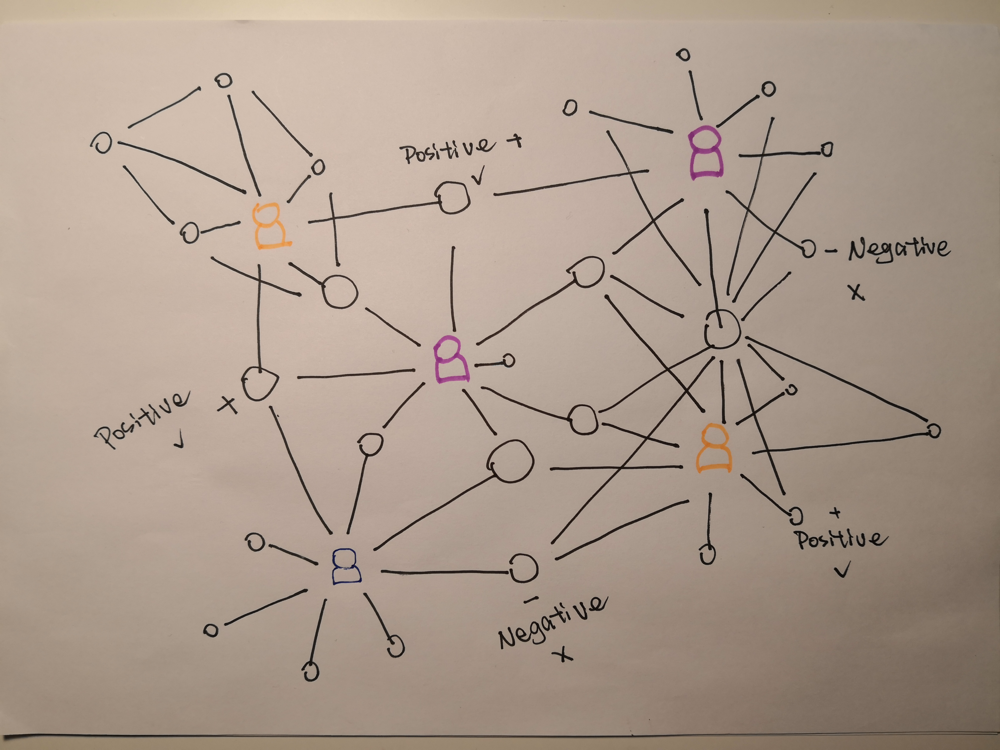
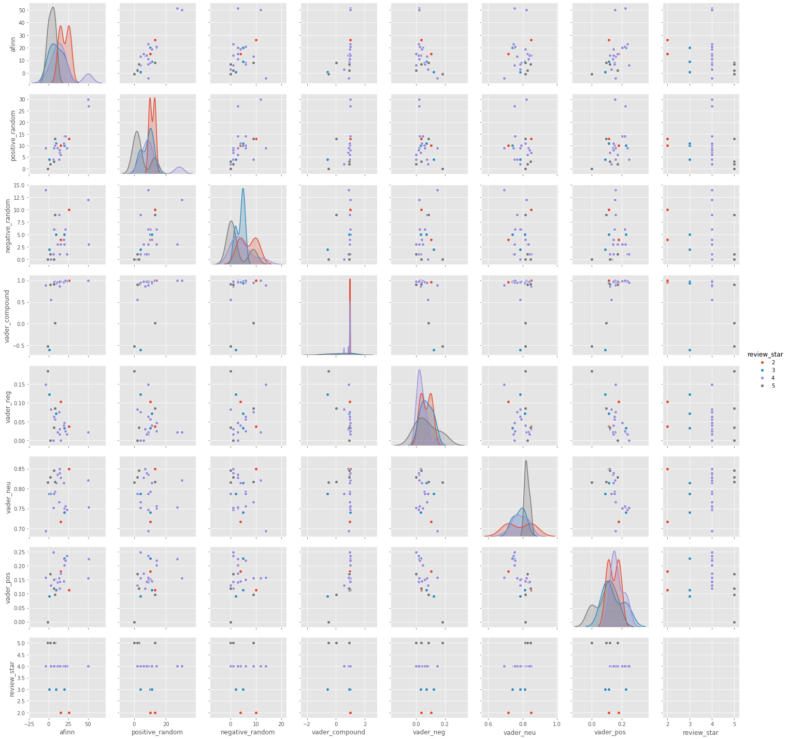

Our Project
My mom once arrived in Copenhagen, she had no idea where is good food. She looked up an App called Yelp and found a Chinese restaurant which is near Nørreport. When close to the dinner time, she looked up Yelp again, it recommended several restaurants for her. She went to the place which is a Danish restaurant and was very satisfied with what she ordered.She wants to know the logic behind these recommendations
-
Overall
Video
Because of the GDPR, we cannot get the data in Denmark from Yelp. So we have to use the data from Yelp America to construct our model. Without the limitation of GDPR, it’s possible to use our method in Denmark and other European countries as well.
Network

In our project, there will be a link between two restaurants when they are reviewed by the same person. If a restaurant has been reviewed by two different people, this restaurant will be connected with all the other restaurants that have reviewed by these two people.The distance between two different nodes is based on the longitude and latitude.
And the correlation between them is based on sentiment analysis, if there are more negative reviews for a restaurant, it means that the more negative correlation between this node and other linked nodes and vice versa.
Map
We have used Folium function to visualize the location of each business in Charlotte area. It shows below, left one is random users location map and right one is friendship users network map. It is easy to be found that random users map has more businesses in the city centre but in the friendship network most of businesses are in the south of the city.
-
Variables / Features
Variable Description business_id 22-character unique string user_id 22-character unique string(user indefication number) categories An array of strings of business categories is_open The status of each busniess latitude/longitude Location name Business name review_star Evaluation of review from each user restaurant_star Rating of each restaurant reviews Text evaluation from each user friend Friendship of each user -
Network
Random & Friend Network
In our network, each node represents a restaurant, a user can review several different restaurants and a restaurant can be reviewed by multiple users. For a restaurant, the more reviews it has, the higher degree it will have, the size of the node will become bigger.

Vis accumsan feugiat adipiscing nisl amet adipiscing accumsan blandit accumsan sapien blandit ac amet faucibus aliquet placerat commodo. Interdum ante aliquet commodo accumsan vis phasellus adipiscing. Ornare a in lacinia. Vestibulum accumsan ac metus massa tempor. Accumsan in lacinia ornare massa amet. Ac interdum ac non praesent. Cubilia lacinia interdum massa faucibus blandit nullam. Accumsan phasellus nunc integer. Accumsan euismod nunc adipiscing lacinia erat ut sit. Arcu amet. Id massa aliquet arcu accumsan lorem amet accumsan.

Amet nibh adipiscing adipiscing. Commodo ante vis placerat interdum massa massa primis. Tempus condimentum tempus non ac varius cubilia adipi
General Network measures
In our network, each node represents a restaurant, a user can review several different restaurants and a restaurant can be reviewed by multiple users. For a restaurant, the more reviews it has, the higher degree it will have, the size of the node will become bigger.


The degree distribution found in figure 4 looks like a power law, but since the function is not very well behaved, which might be due to the underlying community structure of the network, it can not be definately stated, that it is a power law. (Running a linear regression returned
Amet nibh adipiscing adipiscing. Commodo ante vis placerat interdum massa massa primis. Tempus condimentum tempus non ac varius cubilia adipiscing placerat lorem turpis at. Aliquet lorem porttitor interdum. Amet lacus. Aliquam lobortis faucibus blandit ac phasellus. In amet magna non interdum volutpat porttitor metus a ante ac neque. Nisi turpis. Commodo col. Interdum adipiscing mollis ut aliquam id ante adipiscing commodo integer arcu amet Ac interdum ac non praesent. Cubilia lacinia interdum massa faucibus blandit nullam. Accumsan phasellus nunc integer. Accumsan euismod nunc adipiscing lacinia erat ut sit. Arcu amet. Id massa aliquet arcu accumsan lorem amet accumsan commodo odio cubilia ac eu interdum placerat placerat arcu commodo lobortis adipiscing semper ornare pellentesque.
Network plots
In our network, each node represents a restaurant, a user can review several different restaurants and a restaurant can be reviewed by multiple users. For a restaurant, the more reviews it has, the higher degree it will have, the size of the node will become bigger.

Vis accumsan feugiat adipiscing nisl amet adipiscing accumsan blandit accumsan sapien blandit ac amet faucibus aliquet placerat commodo. Interdum ante aliquet commodo accumsan vis phasellus adipiscing. Ornare a in lacinia. Vestibulum accumsan ac metus massa tempor. Accumsan in lacinia ornare massa amet. Ac interdum ac non praesent. Cubilia lacinia interdum massa faucibus blandit nullam. Accumsan phasellus nunc integer. Accumsan euismod nunc adipiscing lacinia erat ut sit. Arcu amet. Id massa aliquet arcu accumsan lorem amet accumsan.

Vis accumsan feugiat adipiscing nisl amet adipiscing accumsan blandit accumsan sapien blandit ac amet faucibus aliquet placerat commodo. Interdum ante aliquet commodo accumsan vis phasellus adipiscing. Ornare a in lacinia. Vestibulum accumsan ac metus massa tempor. Accumsan in lacinia ornare massa amet. Ac interdum ac non praesent. Cubilia lacinia interdum massa faucibus blandit nullam. Accumsan phasellus nunc integer. Accumsan euismod nunc adipiscing lacinia erat ut sit. Arcu amet. Id massa aliquet arcu accumsan lorem amet accumsan.
Coummnity detection
In our network, each node represents a restaurant, a user can review several different restaurants and a restaurant can be reviewed by multiple users. For a restaurant, the more reviews it has, the higher degree it will have, the size of the node will become bigger.

Vis accumsan feugiat adipiscing nisl amet adipiscing accumsan blandit accumsan sapien blandit ac amet faucibus aliquet placerat commodo. Interdum ante aliquet commodo accumsan vis phasellus adipiscing. Ornare a in lacinia. Vestibulum accumsan ac metus massa tempor. Accumsan in lacinia ornare massa amet. Ac interdum ac non praesent. Cubilia lacinia interdum massa faucibus blandit nullam. Accumsan phasellus nunc integer. Accumsan euismod nunc adipiscing lacinia erat ut sit. Arcu amet. Id massa aliquet arcu accumsan lorem amet accumsan.

Vis accumsan feugiat adipiscing nisl amet adipiscing accumsan blandit accumsan sapien blandit ac amet faucibus aliquet placerat commodo. Interdum ante aliquet commodo accumsan vis phasellus adipiscing. Ornare a in lacinia. Vestibulum accumsan ac metus massa tempor. Accumsan in lacinia ornare massa amet. Ac interdum ac non praesent. Cubilia lacinia interdum massa faucibus blandit nullam. Accumsan phasellus nunc integer. Accumsan euismod nunc adipiscing lacinia erat ut sit. Arcu amet. Id massa aliquet arcu accumsan lorem amet accumsan.
Sentiment
Review Overview
The review overview section includes the xxxxxx

VADER
The VADER or ‘Valence Aware Dictionary and sentiment Reasoner’ method uses a sentiment and rule-based lexicon, it is designed to work primarily with text from social media, i.e. tweets, or micro- blogs as it has been described by Hutto and Gilbert (2014). Doing a VADER sentiment analysis on text results in a positive, negative, neutral, and compound score for the text piece. The compound score is the sum of the other three and gives an indication of the general attitude of the text. The score ranges from a negative response = -1 to a positive one = 1. The VADER scores are scaled so a score between 0.5 and 1 is considered positive, a score between -0.5 to 0.5 is considered neutral, and a score below -0.5 is considered negative (Zhou 2019)
Vis accumsan feugiat adipiscing nisl amet adipiscing accumsan blandit accumsan sapien blandit ac amet faucibus aliquet placerat commodo. Interdum ante aliquet commodo accumsan vis phasellus adipiscing. Ornare a in lacinia. Vestibulum accumsan ac metus massa tempor. Accumsan in lacinia ornare massa amet. Ac interdum ac non praesent. Cubilia lacinia interdum massa faucibus blandit nullam. Accumsan phasellus nunc integer. Accumsan euismod nunc adipiscing lacinia erat ut sit. Arcu amet. Id massa aliquet arcu accumsan lorem amet accumsan.
Amet nibh adipiscing adipiscing. Commodo ante vis placerat interdum massa massa primis. Tempus condimentum tempus non ac varius cubilia adipi
Preference

Summary
In our network, each node represents a restaurant, a user can review several different restaurants and a restaurant can be reviewed by multiple users. For a restaurant, the more reviews it has, the higher degree it will have, the size of the node will become bigger.
Vis accumsan feugiat adipiscing nisl amet adipiscing accumsan blandit accumsan sapien blandit ac amet faucibus aliquet placerat commodo. Interdum ante aliquet commodo accumsan vis phasellus adipiscing. Ornare a in lacinia. Vestibulum accumsan ac metus massa tempor. Accumsan in lacinia ornare massa amet. Ac interdum ac non praesent. Cubilia lacinia interdum massa faucibus blandit nullam. Accumsan phasellus nunc integer. Accumsan euismod nunc adipiscing lacinia erat ut sit. Arcu amet. Id massa aliquet arcu accumsan lorem amet accumsan.
Does the most popular restaurant have the highest degree?
Network Name Categories Degree Star Review_count Random Amélie's French Bakery & Café Restaurants, Coffee & Tea, Food, Cafes, Bakeries, Patisserie/Cake Shop, Breakfast & Brunch 2653 4.0 1566 Random The Cowfish Sushi Burger Bar 'Sushi Bars, Restaurants, Asian Fusion, Burgers 2639 4.0 1572 Random Pinky's Westside Grill Salad, American (Traditional), Restaurants, Burgers, Diners, Vegetarian 2596 4.0 991 is_open The status of each busniess latitude/longitude Location name Business name review_star Evaluation of review from each user restaurant_star Rating of each restaurant reviews Text evaluation from each user friend Friendship of each user ©Copyright © 2019 Kaiyue Xu @ Wenhao Zhang